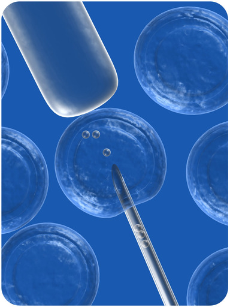
Biotechnology. Gene Therapy. Reality or fiction? During your lifetime, gene therapy may be mainstream medicine. Here we see a representation of the insertion of DNA into the nucleus of a cell. Is this possible? Yes. In this chapter, you will learn how human chromosomes and genes are inherited and how they control the traits that make each of us unique, how they can cause disease, and how those diseases can be treated.
Nobody else in the world is exactly like you. What makes you different from everyone else? Genes have a lot to do with it. Unless you have an identical twin, no one else on Earth has exactly the same genes as you. What about identical twins? Are they identical in every way? They develop from the same fertilized egg, so they have all same genes, but even they are not completely identical. Why? The environment also influences human characteristics, and no two people have exactly the same environment.
All the DNA of the human species makes up the human genome . This DNA consists of about 3 billion base pairs and is divided into thousands of genes on 23 pairs of chromosomes. The human genome also includes noncoding sequences of DNA, as shown in Figure below .
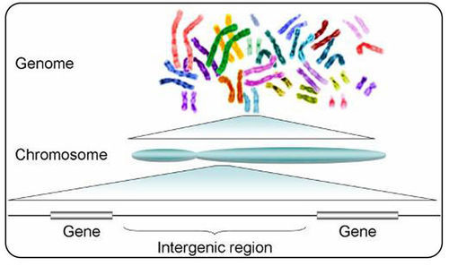
Human Genome, Chromosomes, and Genes. Each chromosome of the human genome contains many genes as well as noncoding intergenic (between genes) regions. Each pair of chromosomes is shown here in a different color.
Thanks to the Human Genome Project , scientists now know the DNA sequence of the entire human genome. The Human Genome Project is an international project that includes scientists from around the world. It began in 1990, and by 2003, scientists had sequenced all 3 billion base pairs of human DNA. Now they are trying to identify all the genes in the sequence.
You can watch a video about the Human Genome Project and how it cracked the code of life at this link: http://www.pbs.org/wgbh/nova/genome/program.html .
Our Molecular Selves video discusses the human genome, and is available at http://www.genome.gov/25520211 or http://www.youtube.com/watch?v=XuUpnAz5y1g&feature=related .
Click on the image above for more content
Each species has a characteristic number of chromosomes. The human species is characterized by 23 pairs of chromosomes, as shown in Figure below and Figure below . You can watch a short animation about human chromosomes at this link: http://www.dnalc.org/view/15520-DNA-is-organized-into-46-chromosomes-including-sex-chromosomes-3D-animation.html .
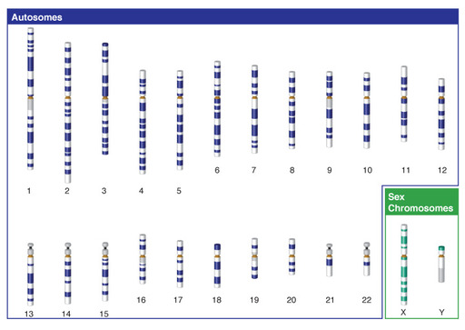
Human Chromosomes. Human chromosomes are shown here arranged by size. Chromosome 1 is the largest, and chromosome 22 is the smallest. All normal human cells (except gametes) have two of each chromosome, for a total of 46 chromosomes per cell. Only one of each pair is shown here.
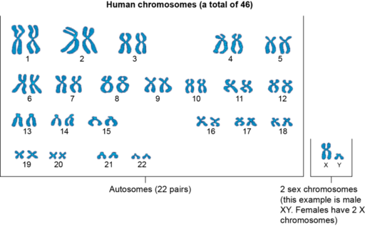
Human Chromosomes. Humans have 23 pairs of chromosomes. Pairs 1-22 are autosomes. Females have two X chromosomes, and males have an X and a Y chromosome.
Of the 23 pairs of human chromosomes, 22 pairs are autosomes (numbers 1–22 in Figure above ). Autosomes are chromosomes that contain genes for characteristics that are unrelated to sex. These chromosomes are the same in males and females. The great majority of human genes are located on autosomes. At the link below, you can click on any human chromosome to see which traits its genes control. http://www.ornl.gov/sci/techresources/Human_Genome/posters/chromosome/chooser.shtml
The remaining pair of human chromosomes consists of the sex chromosomes , X and Y. Females have two X chromosomes, and males have one X and one Y chromosome. In females, one of the X chromosomes in each cell is inactivated and known as a Barr body. This ensures that females, like males, have only one functioning copy of the X chromosome in each cell. As you can see from Figure above and Figure above , the X chromosome is much larger than the Y chromosome. The X chromosome has about 2,000 genes, whereas the Y chromosome has fewer than 100, none of which are essential to survival. Virtually all of the X chromosome genes are unrelated to sex. Only the Y chromosome contains genes that determine sex. A single Y chromosome gene, called SRY (which stands for sex-determining region Y gene), triggers an embryo to develop into a male. Without a Y chromosome, an individual develops into a female, so you can think of female as the default sex of the human species. Can you think of a reason why the Y chromosome is so much smaller than the X chromosome? At the link that follows, you can watch an animation that explains why: http://www.hhmi.org/biointeractive/gender/Y_evolution.html .
Humans have an estimated 20,000 to 22,000 genes. This may sound like a lot, but it really isn’t. Far simpler species have almost as many genes as humans. However, human cells use splicing and other processes to make multiple proteins from the instructions encoded in a single gene. Of the 3 billion base pairs in the human genome, only about 25 percent make up genes and their regulatory elements. The functions of many of the other base pairs are still unclear. To learn more about the coding and noncoding sequences of human DNA, watch the animation at this link: http://www.hhmi.org/biointeractive/dna/DNAi_coding_sequences.html .
The majority of human genes have two or more possible alleles. Differences in alleles account for the considerable genetic variation among people. In fact, most human genetic variation is the result of differences in individual DNA bases within alleles.
Genes that are located on the same chromosome are called linked genes . Alleles for these genes tend to segregate together during meiosis, unless they are separated by crossing-over. Crossing-over occurs when two homologous chromosomes exchange genetic material during meiosis I. The closer together two genes are on a chromosome, the less likely their alleles will be separated by crossing-over. At the following link, you can watch an animation showing how genes on the same chromosome may be separated by crossing-over: http://www.biostudio.com/d_%20Meiotic%20Recombination%20Between%20Linked%20Genes.htm .
Linkage explains why certain characteristics are frequently inherited together. For example, genes for hair color and eye color are linked, so certain hair and eye colors tend to be inherited together, such as blonde hair with blue eyes and brown hair with brown eyes. What other human traits seem to occur together? Do you think they might be controlled by linked genes?
Genes located on the sex chromosomes are called sex-linked genes . Most sex-linked genes are on the X chromosome, because the Y chromosome has relatively few genes. Strictly speaking, genes on the X chromosome are X-linked genes , but the term sex-linked is often used to refer to them.
Sex-linked traits are discussed at http://www.youtube.com/user/khanacademy#p/c/7A9646BC5110CF64/15/-ROhfKyxgCo (14:19).
Click on the image above for more content
Linkage can be assessed by determining how often crossing-over occurs between two genes on the same chromosome. Genes on different (nonhomologous) chromosomes are not linked. They assort independently during meiosis, so they have a 50 percent chance of ending up in different gametes. If genes show up in different gametes less than 50 percent of the time (that is, they tend to be inherited together), they are assumed to be on the same (homologous) chromosome. They may be separated by crossing-over, but this is likely to occur less than 50 percent of the time. The lower the frequency of crossing-over, the closer together on the same chromosome the genes are presumed to be. Frequencies of crossing-over can be used to construct a linkage map like the one in Figure below . A linkage map shows the locations of genes on a chromosome.

Linkage Map for the Human X Chromosome. This linkage map shows the locations of several genes on the X chromosome. Some of the genes code for normal proteins. Others code for abnormal proteins that lead to genetic disorders. Which pair of genes would you expect to have a lower frequency of crossing-over: the genes that code for hemophilia A and G6PD deficiency, or the genes that code for protan and Xm?
1. Describe the human genome.
2. What has the Human Genome Project achieved?
3. What are linked genes?
4. Describe human genetic variation.
5. Explain how you would construct a linkage map for a human chromosome. What data would you need?
6. Compare and contrast human autosomes and sex chromosomes.
7. People with red hair usually have very light skin. What might be a genetic explanation for this observation?
You read in this lesson about the chromosomes and genes that control human traits. Most traits are controlled by genes on autosomes, but many are controlled by genes on the X chromosome.
Characteristics that are encoded in DNA are called genetic traits . Different types of human traits are inherited in different ways. Some human traits have simple inheritance patterns like the traits that Gregor Mendel studied in pea plants. Other human traits have more complex inheritance patterns.
Mendelian inheritance refers to the inheritance of traits controlled by a single gene with two alleles, one of which may be dominant to the other. Not many human traits are controlled by a single gene with two alleles, but they are a good starting point for understanding human heredity. How Mendelian traits are inherited depends on whether the traits are controlled by genes on autosomes or the X chromosome.
Autosomal traits are controlled by genes on one of the 22 human autosomes. Consider earlobe attachment. A single autosomal gene with two alleles determines whether you have attached earlobes or free-hanging earlobes. The allele for free-hanging earlobes (F) is dominant to the allele for attached earlobes (f). Other single-gene autosomal traits include widow’s peak and hitchhiker’s thumb. The dominant and recessive forms of these traits are shown in Figure below . Which form of these traits do you have? What are your possible genotypes for the traits? The chart in Figure below is called a pedigree . It shows how the earlobe trait was passed from generation to generation within a family. Pedigrees are useful tools for studying inheritance patterns.
You can watch a video explaining how pedigrees are used and what they reveal at this link: http://www.youtube.com/watch?v=HbIHjsn5cHo .

Having free-hanging earlobes is an autosomal dominant trait. This figure shows the trait and how it was inherited in a family over three generations. Shading indicates people who have the recessive form of the trait. Look at (or feel) your own earlobes. Which form of the trait do you have? Can you tell which genotype you have?
Other single-gene autosomal traits include widow's peak and hitchhiker's thumb. The dominant and recessive forms of these traits are shown in Figure below . Which form of these traits do you have? What are your possible genotypes for the traits?
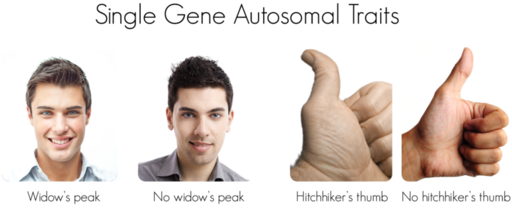
Widow's peak and hitchhiker's thumb are dominant traits controlled by a single autosomal gene.
Traits controlled by genes on the sex chromosomes are called sex-linked traits , or X-linked traits in the case of the X chromosome. Single-gene X-linked traits have a different pattern of inheritance than single-gene autosomal traits. Do you know why? It’s because males have just one X chromosome. In addition, they always inherit their X chromosome from their mother, and they pass it on to all their daughters but none of their sons. This is illustrated in Figure below .
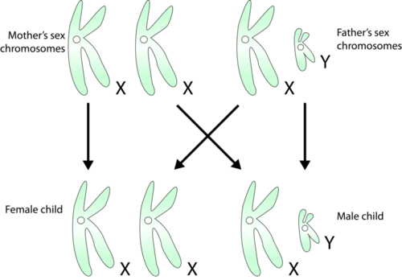
Inheritance of Sex Chromosomes. Mothers pass only X chromosomes to their children. Fathers always pass their X chromosome to their daughters and their Y chromosome to their sons. Can you explain why fathers always determine the sex of the offspring?
Because males have just one X chromosome, they have only one allele for any X-linked trait. Therefore, a recessive X-linked allele is always expressed in males. Because females have two X chromosomes, they have two alleles for any X-linked trait. Therefore, they must inherit two copies of the recessive allele to express the recessive trait. This explains why X-linked recessive traits are less common in females than males. An example of a recessive X-linked trait is red-green color blindness. People with this trait cannot distinguish between the colors red and green. More than one recessive gene on the X chromosome codes for this trait, which is fairly common in males but relatively rare in females ( Figure below ). At the link below, you can watch an animation about another X-linked recessive trait called hemophilia A. http://www.dnalc.org/view/16315-Animation-13-Mendelian-laws-apply-to-human-beings-.html
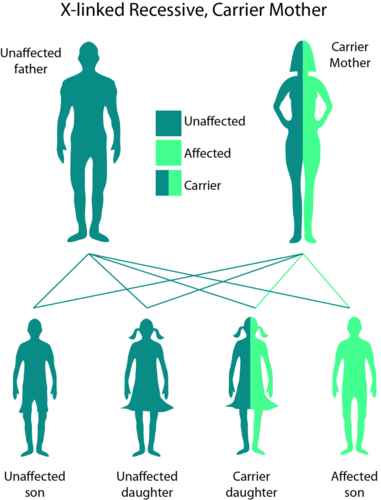
Pedigree for Color Blindness. Color blindness is an X-linked recessive trait. Mothers pass the recessive allele for the trait to their sons, who pass it to their daughters.
The following link is to a pedigree analysis activity. Autosomal dominant, autosomal recessive and sex-linked recessive inheritance is explored through an interactive activity. CK-12 Pedigree Analysis Animation
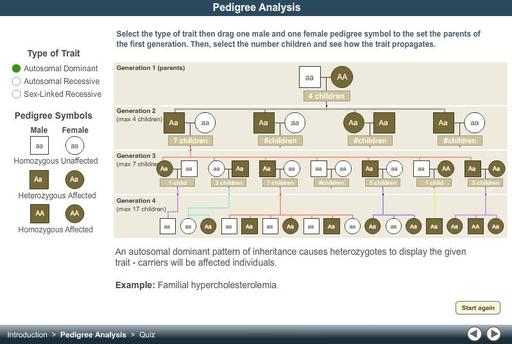
Most human traits have more complex modes of inheritance than simple Mendelian inheritance. For example, the traits may be controlled by multiple alleles or multiple genes.
The majority of human genes are thought to have more than two alleles. Traits controlled by a single gene with more than two alleles are called multiple allele traits . An example is ABO blood type. There are three common alleles for this trait, which can be represented by the letters A, B, and O. As shown in Table below , there are six possible ABO genotypes but only four phenotypes. This is because alleles A and B are codominant to each other and both are dominant to O. You can learn more about ABO blood type by watching the video at this link: http://www.youtube.com/watch?v=oz4Ctau8mC8 (13:15).
| Genotype | Phenotype |
|---|---|
| AA | A |
| AO | A |
| AB | AB |
| BB | B |
| BO | B |
| OO | O |
Many human traits are controlled by more than one gene. These traits are called polygenic traits (or characteristics). The alleles of each gene have a minor additive effect on the phenotype. There are many possible combinations of alleles, especially if each gene has multiple alleles. Therefore, a whole continuum of phenotypes is possible. An example of a human polygenic trait is adult height. Several genes, each with more than one allele, contribute to this trait, so there are many possible adult heights. For example, one adult’s height might be 1.655 m (5.430 feet), and another adult’s height might be 1.656 m (5.433 feet) tall. Adult height ranges from less than 5 feet to more than 6 feet, but the majority of people fall near the middle of the range, as shown in Figure below .
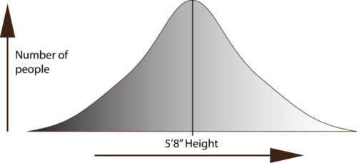
Human Adult Height. Like many other polygenic traits, adult height has a bell-shaped distribution.
Many polygenic traits are affected by the environment. For example, adult height might be negatively impacted by poor diet or illness during childhood. Skin color is another polygenic trait. There is a wide range of skin colors in people worldwide. In addition to differences in skin color genes, differences in exposure to UV light explain most of the variation. As shown in Figure below , exposure to UV light darkens the skin.
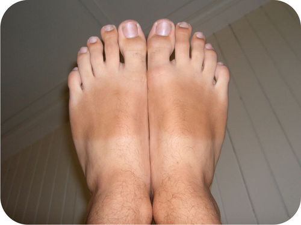
Effects of UV Light on Skin Color. This picture shows clearly how exposure to UV light can affect skin color. UV light causes skin cells to produce more of a brown pigment called melanin, which makes skin darker.
Sometimes a single gene may affect more than one trait. This is called pleiotropy . An example is the gene that codes for the main protein in collagen, a substance that helps form bones. The gene for this protein also affects the ears and eyes. This was discovered from mutations in the gene. They result in problems not only in bones but also in these sensory organs.
In other cases, one gene affects the expression of another gene. This is called epistasis . Epistasis is similar to dominance, except that it occurs between different genes rather than between different alleles for the same gene. An example is the gene coding for widow’s peak. A gene that codes for baldness would “hide” the widow’s peak trait if it occurred in the same person.
Many genetic disorders are caused by mutations in one or a few genes. Other genetic disorders are caused by abnormal numbers of chromosomes.
Table below lists several genetic disorders caused by mutations in just one gene. Some of the disorders are caused by mutations in autosomal genes, others by mutations in X-linked genes. Which disorder would you expect to be more common in males than females? You can watch a video about genetic disorders caused by mutations at this link: http://www.pbs.org/wgbh/nova/programs/ht/rv/2809_03.html .
You can click on any human chromosome at this link to see the genetic disorders associated with it: http://www.ornl.gov/sci/techresources/Human_Genome/posters/chromosome/chooser.shtml .
| Genetic Disorder | Direct Effect of Mutation | Signs and Symptoms of the Disorder | Mode of Inheritance |
|---|---|---|---|
| Marfan syndrome | defective protein in connective tissue | heart and bone defects and unusually long, slender limbs and fingers | autosomal dominant |
| Sickle cell anemia | abnormal hemoglobin protein in red blood cells | sickle-shaped red blood cells that clog tiny blood vessels, causing pain and damaging organs and joints | autosomal recessive |
| Vitamin D-resistant rickets | lack of a substance needed for bones to absorb minerals | soft bones that easily become deformed, leading to bowed legs and other skeletal deformities | X-linked dominant |
| Hemophilia A | reduced activity of a protein needed for blood clotting | internal and external bleeding that occurs easily and is difficult to control | X-linked recessive |
Few genetic disorders are controlled by dominant alleles. A mutant dominant allele is expressed in every individual who inherits even one copy of it. If it causes a serious disorder, affected people may die young and fail to reproduce. Therefore, the mutant dominant allele is likely to die out of the population. A mutant recessive allele, such as the allele that causes sickle cell anemia (see Figure below and the link that follows), is not expressed in people who inherit just one copy of it. These people are called carriers. They do not have the disorder themselves, but they carry the mutant allele and can pass it to their offspring. Thus, the allele is likely to pass on to the next generation rather than die out. http://www.dnalc.org/resources/3d/17-sickle-cell.html

Sickle-Shaped and Normal Red Blood Cells. Sickle cell anemia is an autosomal recessive disorder. The mutation that causes the disorder affects just one amino acid in a single protein, but it has serious consequences for the affected person. This photo shows the sickle shape of red blood cells in people with sickle cell anemia.
Cystic Fibrosis and Tay-Sachs disease are two additional severe genetic disorders. They are discussed in the following video: http://www.youtube.com/watch?v=8s4he3wLgkM&feature=related (9:31). Tay-Sachs is further discussed at http://www.youtube.com/watch?v=1RO0LOgHbIo&feature=channel (3:13) and http://www.youtube.com/watch?v=6zNj5LdDuTA (2:01).
Mistakes may occur during meiosis that result in nondisjunction . This is the failure of replicated chromosomes to separate during meiosis (the animation at the link below shows how this happens). Some of the resulting gametes will be missing a chromosome, while others will have an extra copy of the chromosome. If such gametes are fertilized and form zygotes, they usually do not survive. If they do survive, the individuals are likely to have serious genetic disorders. Table below lists several genetic disorders that are caused by abnormal numbers of chromosomes. Most chromosomal disorders involve the X chromosome. Look back at the X and Y chromosomes and you will see why. The X and Y chromosomes are very different in size, so nondisjunction of the sex chromosomes occurs relatively often. http://learn.genetics.utah.edu/content/begin/traits/predictdisorder/index.html
| Genetic Disorder | Genotype | Phenotypic Effects |
|---|---|---|
| Down syndrome | extra copy (complete or partial) of chromosome 21 (see Figure below ) | developmental delays, distinctive facial appearance, and other abnormalities (see Figure below ) |
| Turner’s syndrome | one X chromosome but no other sex chromosome (XO) | female with short height and infertility (inability to reproduce) |
| Triple X syndrome | three X chromosomes (XXX) | female with mild developmental delays and menstrual irregularities |
| Klinefelter’s syndrome | one Y chromosome and two or more X chromosomes (XXY, XXXY) | male with problems in sexual development and reduced levels of the male hormone testosterone |
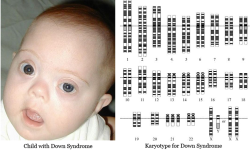
Trisomy 21 (Down Syndrome) Karyotype. A karyotype is a picture of a cell's chromosomes. Note the extra chromosome 21. Child with Down syndrome, exhibiting characteristic facial appearance.
A genetic disorder that is caused by a mutation can be inherited. Therefore, people with a genetic disorder in their family may be concerned about having children with the disorder. Professionals known as genetic counselors can help them understand the risks of their children being affected. If they decide to have children, they may be advised to have prenatal (“before birth”) testing to see if the fetus has any genetic abnormalities. One method of prenatal testing is amniocentesis. In this procedure, a few fetal cells are extracted from the fluid surrounding the fetus, and the fetal chromosomes are examined.
The symptoms of genetic disorders can sometimes be treated, but cures for genetic disorders are still in the early stages of development. One potential cure that has already been used with some success is gene therapy . This involves inserting normal genes into cells with mutant genes. At the following link, you can watch the video Sickle Cell Anemia: Hope from Gene Therapy, to learn how scientists are trying to cure sickle-cell anemia with gene therapy. http://www.pubinfo.vcu.edu/secretsofthesequence/playlist_frame.asp
If you could learn your risk of getting cancer or another genetic disease, would you? Though this is a personal decision, it is a possibility. A San Francisco company now makes it easy to order medical genetic tests through the Web. See Genetic Testing through the Web at http://www.kqed.org/quest/television/genetic-testing-through-the-web .
1. Describe the inheritance pattern for a single-gene autosomal dominant trait, such as free-hanging earlobes.
2. Give an example of a multiple allele trait and a polygenic trait.
3. Identify factors that influence human skin color.
4. Describe a genetic disorder caused by a mutation in a single gene.
5. What causes Down syndrome?
6. What is gene therapy?
7. Draw a pedigree for hitchhiker’s thumb. Your pedigree should cover at least two generations and include both dominant and recessive forms of the trait. Label the pedigree with genotypes, using the letter H to represent the dominant allele for the trait and the letter h to represent the recessive allele.
8. How might red-green color blindness affect the health of a person with this trait?
9. Compare and contrast dominance and epistasis.
10. Explain why genetic disorders caused by abnormal numbers of chromosomes most often involve the X chromosome.
Technology has been developed to cure some genetic disorders with gene therapy. This involves inserting normal genes into cells with mutations. Scientists use genetic technology for other purposes as well.
Biotechnology is the use of technology to change the genetic makeup of living things for human purposes. Generally, the purpose of biotechnology is to create organisms that are useful to humans or to cure genetic disorders. For example, biotechnology may be used to create crops that resist insect pests or yield more food, or to create new treatments for human diseases.
Biotechnology: The Invisible Revolution can be seen at http://www.youtube.com/watch?v=OcG9q9cPqm4 .
“What does biotechnology have to do with me?” is discussed in the following video: http://www.youtube.com/watch?v=rrT5BT_7HdI&feature=related (10:01).
Biotechnology uses a variety of techniques to achieve its aims. Two commonly used techniques are gene cloning and the polymerase chain reaction.
Gene cloning is the process of isolating and making copies of a gene. This is useful for many purposes. For example, gene cloning might be used to isolate and make copies of a normal gene for gene therapy. Gene cloning involves four steps: isolation, ligation, transformation, and selection. You can watch an interactive animation about gene cloning at this link: http://www.teachersdomain.org/asset/biot09_int_geneclone/ .
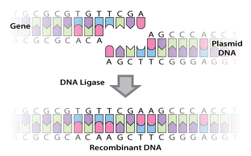
Ligation. DNA ligase joins together an isolated gene and plasmid DNA. This produces recombinant DNA.
Recombinant DNA technology is discussed in the following videos and animations: http://www.youtube.com/watch?v=x2jUMG2E-ic (4.36), http://www.youtube.com/watch?v=Jy15BWVxTC0 (0.50), http://www.youtube.com/watch?v=sjwNtQYLKeU&feature=related (7.20), http://www.youtube.com/watch?v=Fi63VjfhsfI (3:59).
The polymerase chain reaction (PCR) makes many copies of a gene or other DNA segment. This might be done in order to make large quantities of a gene for genetic testing. PCR involves three steps: denaturing, annealing, and extension. The three steps are illustrated in Figure below . They are repeated many times in a cycle to make large quantities of the gene. You can watch animations of PCR at these links:
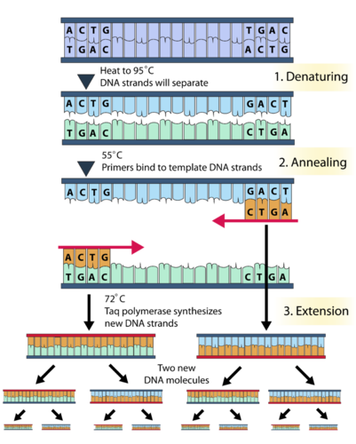
The Polymerase Chain Reaction. The polymerase chain reaction involves three steps. High temperatures are needed for the process to work. The enzyme Taq polymerase is used in step 3 because it can withstand high temperatures.
Methods of biotechnology can be used for many practical purposes. They are used widely in both medicine and agriculture. To see how biotechnology can be used to solve crimes, watch the video Justice DNA—Freeing the Innocent at the following link: http://www.pubinfo.vcu.edu/secretsofthesequence/playlist_frame.asp .
In addition to gene therapy for genetic disorders, biotechnology can be used to transform bacteria so they are able to make human proteins. Figure below shows how this is done. Proteins made by the bacteria are injected into people who cannot produce them because of mutations.
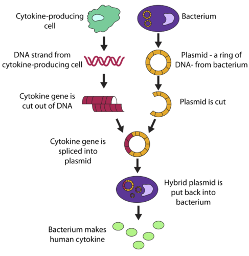
Genetically Engineering Bacteria to Produce a Human Protein. Bacteria can be genetically engineered to produce a human protein, such as a cytokine. A cytokine is a small protein that helps fight infections.
Insulin was the first human protein to be produced in this way. Insulin helps cells take up glucose from the blood. People with type 1 diabetes have a mutation in the gene that normally codes for insulin. Without insulin, their blood glucose rises to harmfully high levels. At present, the only treatment for type 1 diabetes is the injection of insulin from outside sources. Until recently, there was no known way to make insulin outside the human body. The problem was solved by gene cloning. The human insulin gene was cloned and used to transform bacterial cells, which could then produce large quantities of human insulin.
As we have learned, we know that, thanks to our DNA, each of us is a little bit different. Some of those differences are obvious, like eye and hair color, but others are not so obvious, like how our bodies react to medication. Researchers are beginning to look at how to tailor medical treatments to our genetic profiles, in a relatively new field called Pharmacogenomics. Some of the biggest breakthroughs have been in cancer treatment. For additional information on this “personalized medicine,” listen to http://www.kqed.org/quest/radio/personalized-medicine and see http://www.kqed.org/quest/blog/2009/09/11/reporters-notes-personalized-medicine/ .
Imagine living cells acting as memory devices; biofuels brewing from yeast, or a light receptor taken from algae that makes photographs on a plate of bacteria. The new field of Synthetic Biology is making biology easier to engineer so that new functions can be derived from living systems. Find out the tools that synthetic biologists are using and the exciting things they are building at http://www.kqed.org/quest/television/decoding-synthetic-biology and http://www.kqed.org/quest/television/web-extra-synthetic-biology-extended-interview .

Click on the image above for more content
Biotechnology has been used to create transgenic crops. Transgenic crops are genetically modified with new genes that code for traits useful to humans. The diagram in Figure below shows how a transgenic crop is created. You can learn more about how scientists create transgenic crops with the interactive animation Engineer a Crop—Transgenic Manipulation at this link: http://www.pbs.org/wgbh/harvest/engineer/transgen.html .
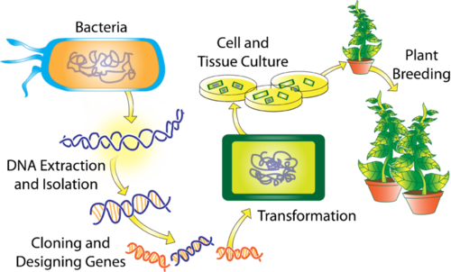
Creating a Transgenic Crop. A transgenic crop is genetically modified to be more useful to humans.
Transgenic crops have been created with a variety of different traits, such as yielding more food, tasting better, surviving drought, and resisting insect pests. Scientists have even created a transgenic purple tomato that contains a cancer-fighting compound (see Figure below ). To learn how scientists have used biotechnology to create plants that can grow in salty soil, watch the video Salt of the Earth—Engineering Salt-Tolerant Plants at this link: http://www.pubinfo.vcu.edu/secretsofthesequence/playlist_frame.asp .
Transgenic Purple Tomato. A purple tomato is genetically modified to contain a cancer-fighting compound. A gene for the compound was transferred into normal red tomatoes.
Biotechnology in agriculture is discussed at http://www.youtube.com/watch?v=IY3mfgbe-0c (6:40).
The use of biotechnology has raised a number of ethical, legal, and social issues. Here are just a few:
Addressing such issues is beyond the scope of this FlexBook. The following example shows how complex the issues may be:
A strain of corn has been created with a gene that encodes a natural pesticide. On the positive side, the transgenic corn is not eaten by insects, so there is more corn for people to eat. The corn also doesn’t need to be sprayed with chemical pesticides, which can harm people and other living things. On the negative side, the transgenic corn has been shown to cross-pollinate nearby milkweed plants. Offspring of the cross-pollinated milkweed plants are now known to be toxic to monarch butterfly caterpillars that depend on them for food. Scientists are concerned that this may threaten the monarch species as well as other species that normally eat monarchs.
As this example shows, the pros of biotechnology may be obvious, but the cons may not be known until it is too late. Unforeseen harm may be done to people, other species, and entire ecosystems. No doubt the ethical, legal, and social issues raised by biotechnology will be debated for decades to come. For a recent debate about the ethics of applying biotechnology to humans, watch the video at the link below. In the video, a Harvard University professor of government and a Princeton University professor of bioethics debate the science of “perfecting humans.” http://www.youtube.com/watch?v=-BPna-fSNOE
1. Define biotechnology.
2. What is recombinant DNA?
3. Identify the steps of gene cloning.
4. What is the purpose of the polymerase chain reaction?
5. Make a flow chart outlining the steps involved in creating a transgenic crop.
6. Explain how bacteria can be genetically engineered to produce a human protein.
7. Identify an ethical, legal, or social issue raised by biotechnology. State your view on the issue, and develop a logical argument to support your view.
In this lesson, you read that bacteria can be transformed with human genes so they are able to make human proteins. This is possible because the genetic code is universal. Genetic information is encoded and read in the same way in all known species. This demonstrates that all life on Earth has a common evolutionary history, beginning with the earliest living things.
Opening image copyright by Sebastian Kaulitzki, 2010. http://www.shutterstock.com . Used under license from Shutterstock.com.
{kind=link}
{kind=link}